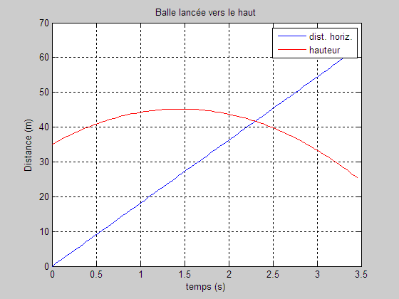

GraphEx2
clear; clc; close all v0 = 23; % m/s angle = 38; % degrés en élévation h0 = 35; % hauteur du bâtiment en m g = -9.8; % m/s² vers le bas % Il n'y a pas d'accélération en x.
Générer un vecteur temps, par exemple de 0 à 3.5s environ.
for i = 1:100 t(i) = (i-1)*(3.5/100); v_x0 = v0 * cosd(angle); s_x(i) = v_x0*t(i); % distance horizontale. v_y0 = v0 * sind(angle); s_y(i) = h0 + v_y0*t(i) + 0.5*g*t(i)^2; % hauteur end % S_x en bleu, s_y en rouge : plot(t,s_x,'b-', t,s_y,'r-'); % Compléter le graphique. grid on; xlabel('temps (s)'); ylabel('Distance (m)'); title('Balle lancée vers le haut'); legend('dist. horiz.', 'hauteur');

Utiliser la loupe du menu pour mieux visualiser la solution au point de croisement.